B
The Behaviour Hive
Teacher Guide
Know how every child arrived — before the bell rings.
Trial Programme Edition
For technical help, contact daniel@thebehaviourhive.com
Chapter 1
Getting started
Setting up as a class teacher takes a couple of minutes, and linking your first pupil is even quicker.
Choose your role
After registering, select "Class teacher" from the role screen. You'll then be asked for your school's institution code — get this from your school administrator.
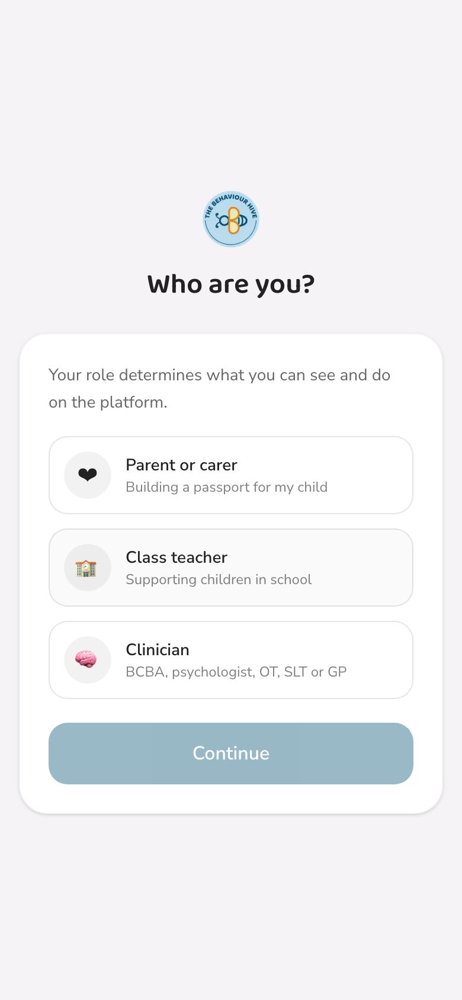
Choose "Class teacher" on the role screen
Adding your first pupil
From your Students page, tap the + button and enter the child's passport code — the parent gets this from their own app and shares it with you directly.
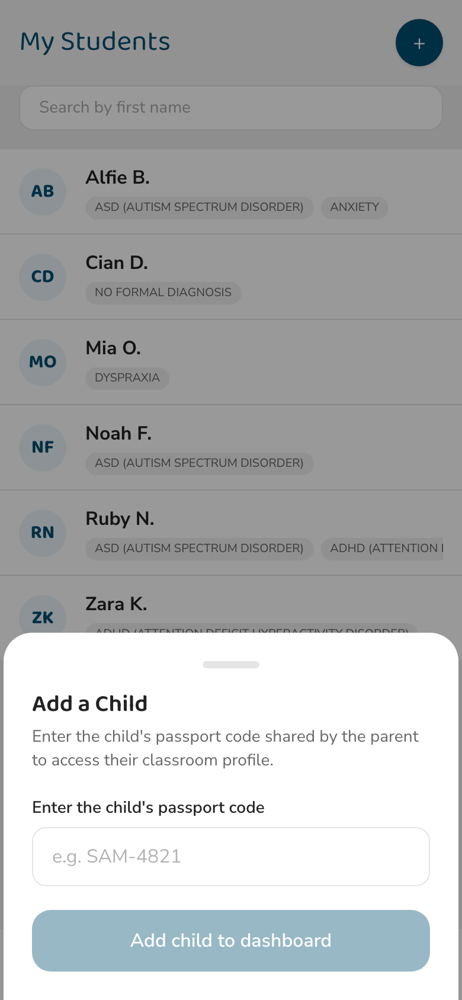
Enter the child's passport code
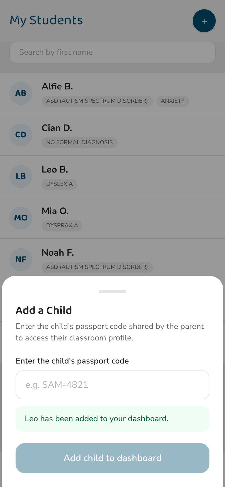
Added straight away
The pupil only appears once the parent has also approved your school separately. If a code doesn't work yet, it usually just means that step is still pending on the parent's side.
You'll see a shortened name at first
Until a parent has approved your school, and always by design, you see only a first name and last initial — never a full surname. This protects a child's identity while access is still being established. It's not a bug, and it's not something you need to chase.
Chapter 2
Your dashboard
Everything you need before the school day starts, on one screen.

Your dashboard: stats, the morning grid, and quick actions
Your stats, at a glance
Three numbers greet you every morning: how many pupils are active, how many red alerts came in today, and how many messages are unread.

Active pupils, red alerts, and unread messages
The morning grid
Every pupil who's checked in appears as a coloured card, sorted red first so the children who need you most are never buried at the bottom.
Red — Dysregulated. Tap the card for the full detail.
Amber — Anxious. Also tappable for more detail.
Green — Settled. A good start to the day.
Grey — Awaiting. No check-in received yet.
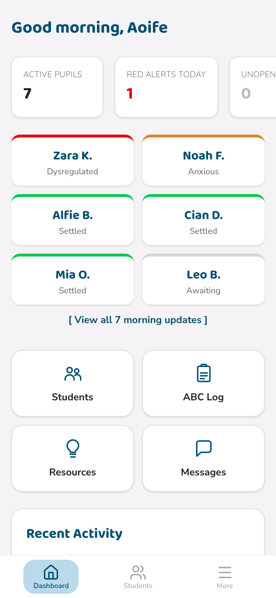
Red cards are sorted first — tap one to see the full detail
Tap a red or amber card to see exactly what the parent reported — sleep, regulation, any disruptions, and their note.
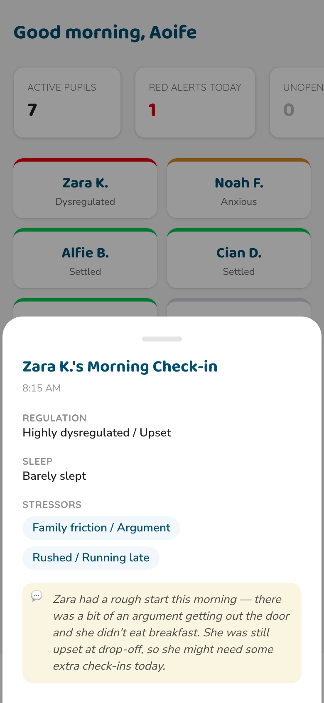
A red card's detail, including the parent's heads-up note
Got a bigger class? "View all morning updates" shows the full list, not just the highlights.
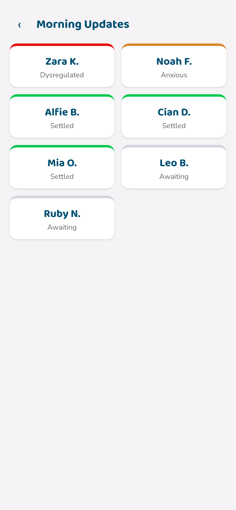
The full morning updates list
Chapter 3
A child's passport
Tap any pupil to open their Classroom Profile — everything a parent has chosen to share with their school, organised into tabs.
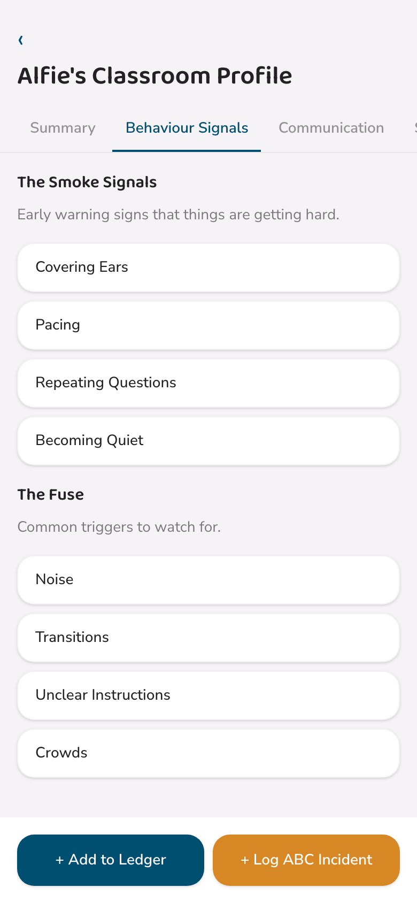
Behaviour Signals: "The Smoke Signals" and "The Fuse"
"The Smoke Signals" are the early warning signs that things are getting hard — worth watching for before things escalate. "The Fuse" lists common triggers to keep in mind. Further tabs cover communication style and the specific strategies that help before, during, and after distress.
What you won't see
Clinical notes added by a connected clinician are never visible to you, by design. You see everything a parent has chosen to share for the classroom — nothing more, nothing clinical.
The strategy ledger
A running log of wins, observations, and updates you and colleagues log against a pupil — useful for spotting what's actually working over time.
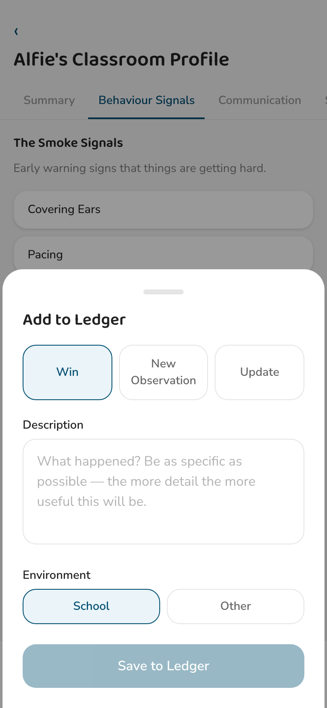
Adding a new strategy ledger entry
Chapter 4
The end-of-day update
The parent is waiting to know how today went. A two-minute update from you closes that loop, every single day.
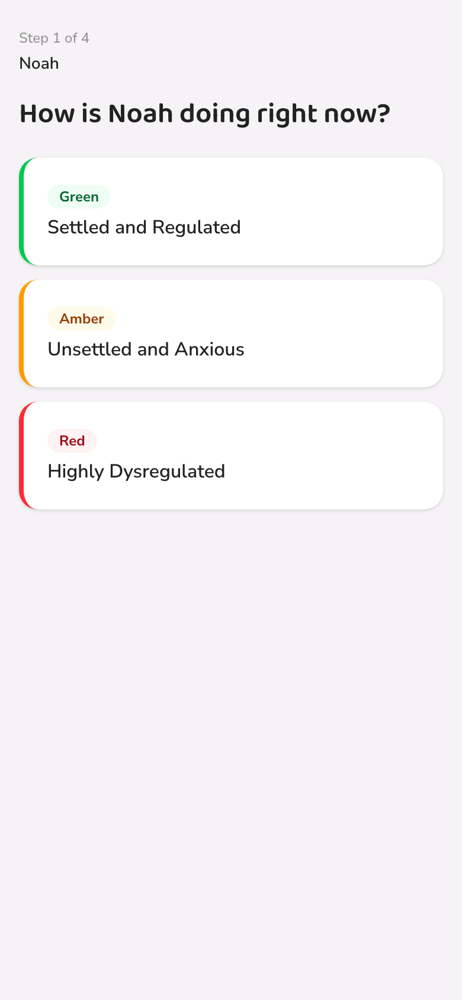
1. How were they?
Settled, unsettled, or dysregulated
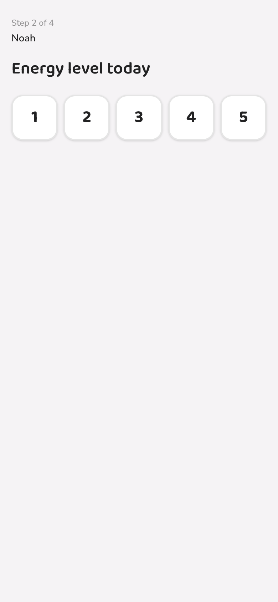
2. Energy level
A quick 1–5 scale
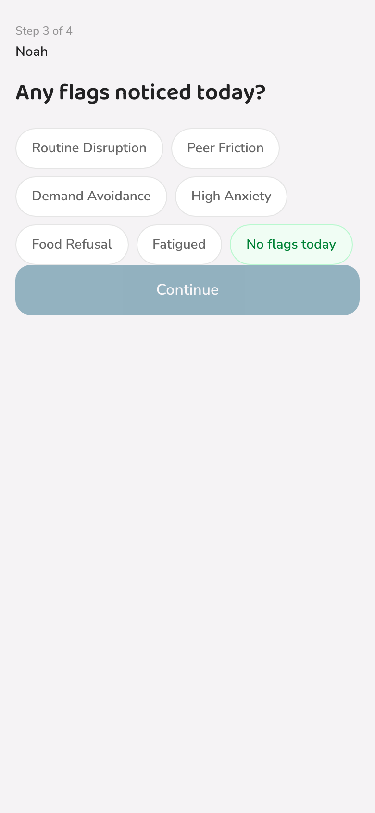
3. Any flags?
Tap all that apply, or none at all
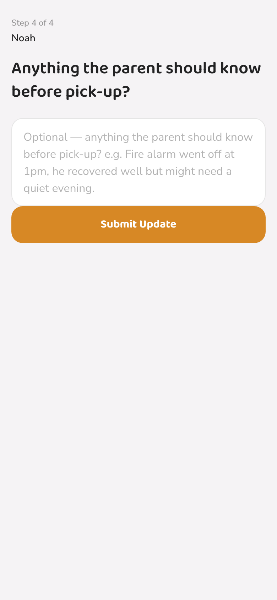
4. A note for home
Optional, but often the most valued part
Submit, and it lands directly on the parent's home screen — no phone call, no note stuffed in a schoolbag.
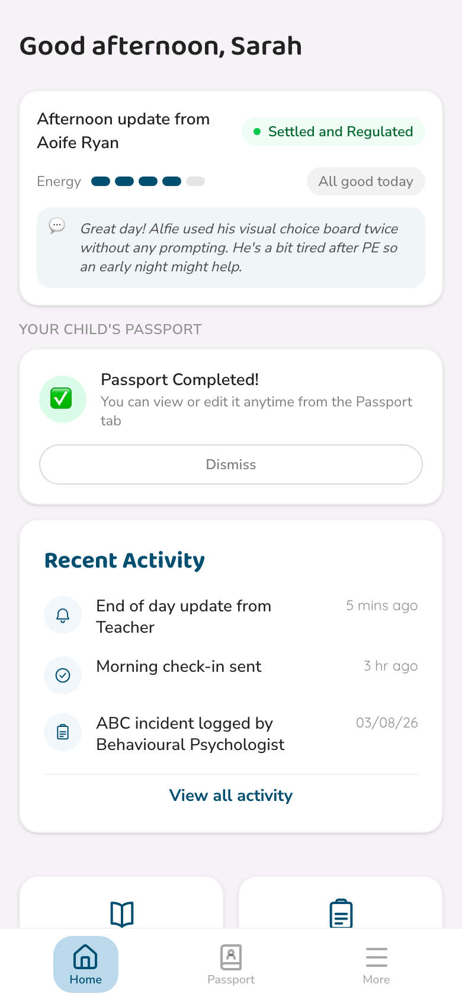
What the parent sees the moment you submit
Chapter 5
Logging incidents
When something happens worth recording, the ABC log gives you a fast, structured way to capture it — Antecedent, Behaviour, Consequence: what happened just before, what the child did, and what happened right after.
From the ABC Log quick action, choose the pupil first.
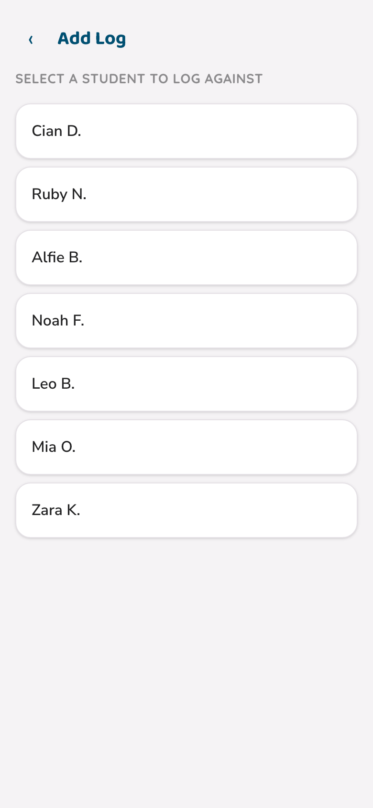
Choosing which pupil the log is for
Every log you save is visible to the child's parent and to any connected clinician on the Incident Timeline — building one shared, accurate record instead of three separate ones.
Chapter 6
Your students page
Every pupil you're connected to, in one searchable list — with their diagnoses visible as quick-reference tags.
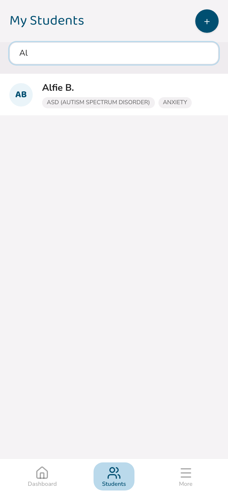
Searching by first name
Tap the + button at any time to add another pupil using their passport code, exactly as covered in Chapter 1.
Chapter 7
Help & Support
Most hiccups have a quick fix. Here's where to start, and how to reach us for everything else.
Quick fixes first
The app looks out of date or something isn't loading
Close the app fully — swipe up from the bottom and swipe the app away — then reopen it from the icon.
I'm stuck on a spinning or loading screen
Check your internet connection, then force-close and reopen the app.
I forgot my password
Tap "Forgot password?" on the login screen and follow the link we email you.
The app is showing a screen I can't get out of
Close and reopen the app. If it keeps happening, note which screen it was and contact us below.
I didn't get my sign-up code email
Check your spam or junk folder first — the sender is info@thebehaviourhive.com.
Common questions
A child I re-added isn't appearing on my dashboard.
Check with the parent that their school approval is still active — a parent can revoke it at any time, which quietly removes a pupil from your list until they reconnect.
Why can I only see a shortened name for some pupils?
That's expected until the parent approves your school (Chapter 1) — it's a deliberate privacy step, not a fault.
Can I submit an end-of-day update twice in one day?
Yes — if you submit again, we'll ask you to confirm, since it replaces your earlier update rather than adding a second one.
When you contact us
Please include: which screen you were on, what you tapped, what you expected to happen, what happened instead, and your phone type. This one detail alone usually helps us fix things in a fraction of the time.
Still stuck?
For technical help, contact daniel@thebehaviourhive.com
Thank you for being part of our trial programme. Every note you send, every question you ask — it all goes directly into making this better for the next classroom that needs it.